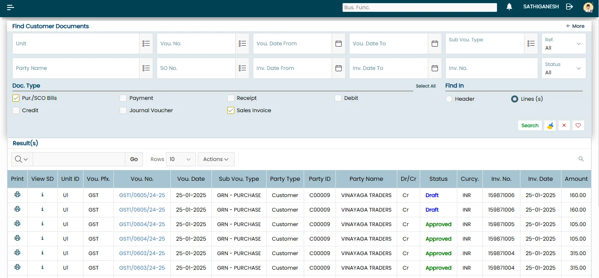

<div data-category="Financials" data-title="Purchase Order (With reference)" data-updated="December 01, 2025" data-contributors="RoadmapIT" data-breadcrumb="Home,Financials,Purchase Order (With reference)">
  <div class="page-content">
    <p>This Screen is used to View the Customer Document.</p>
    <h5>Navigation path:</h5>
    <p class="fs-6">Financials \ Transactions \ Customer Documents</p>
    
    <ul style="list-style-type: none; align-content: center">
      <li class="mouse-icon">Search screen displays the list of Customer Documents with the relevant details and status</li>
      <li class="mouse-icon">Click on search to filter all the records.</li>
      <li class="mouse-icon">User can filter the respective documents by entering the search parameters at the header.</li>
      <li class="mouse-icon">Using search, system displays the results relevant to the search parameters entered.</li>
      <li class="mouse-icon">On-click; the corresponding transaction record will be displayed.</li>
      <li class="mouse-icon">Using  icon, entered search parameters can be cleared.</li>
      <li class="mouse-icon">To close the screen, use <i class="bi bi-x fs-4 mx-2 text-danger"></i> icon.</li>
      <li class="mouse-icon">Click on the document to view the details.</li>
    </ul>
  </div>
</div>
